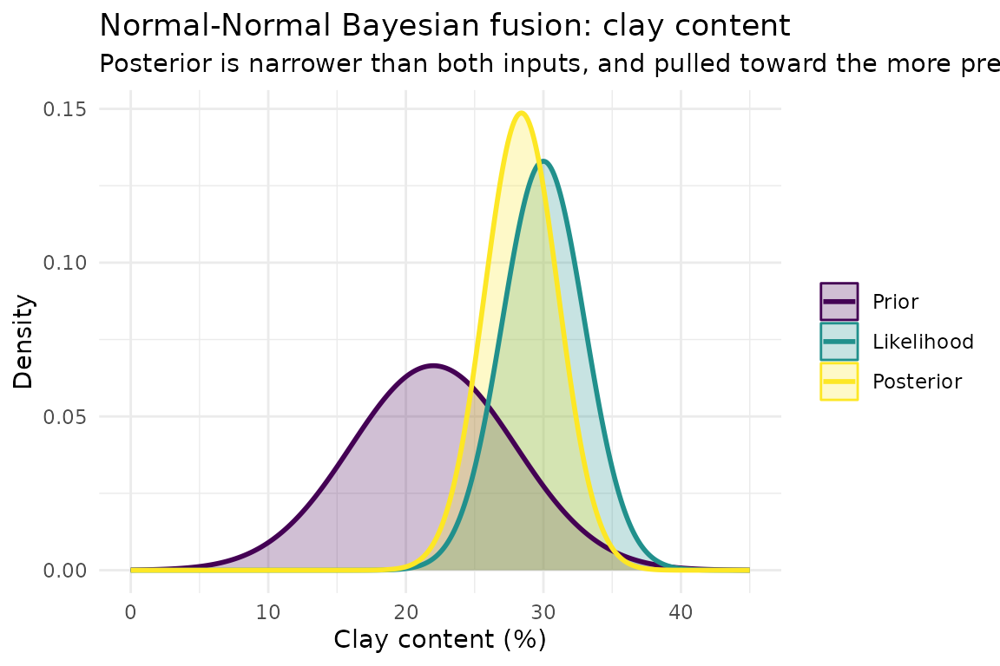
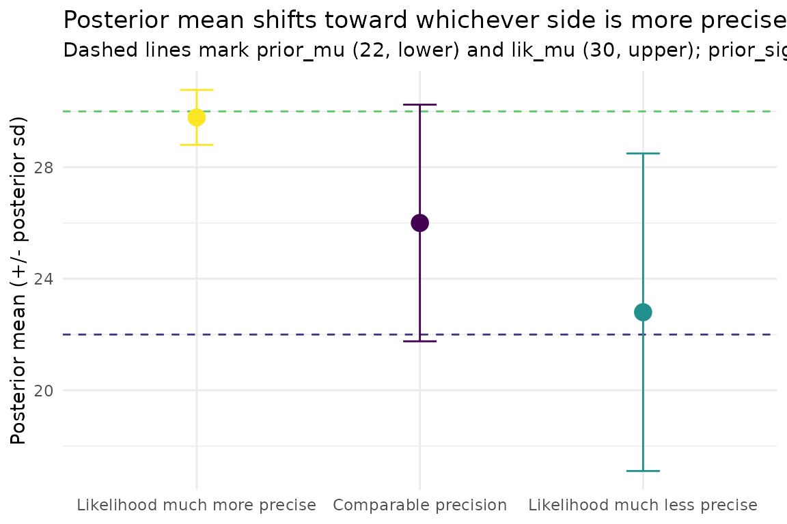
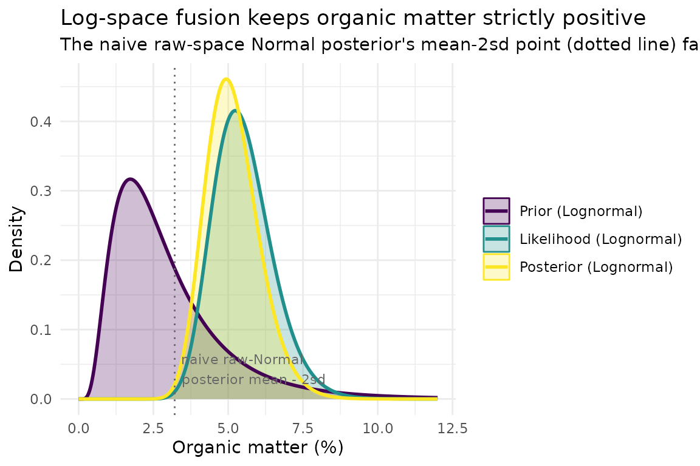
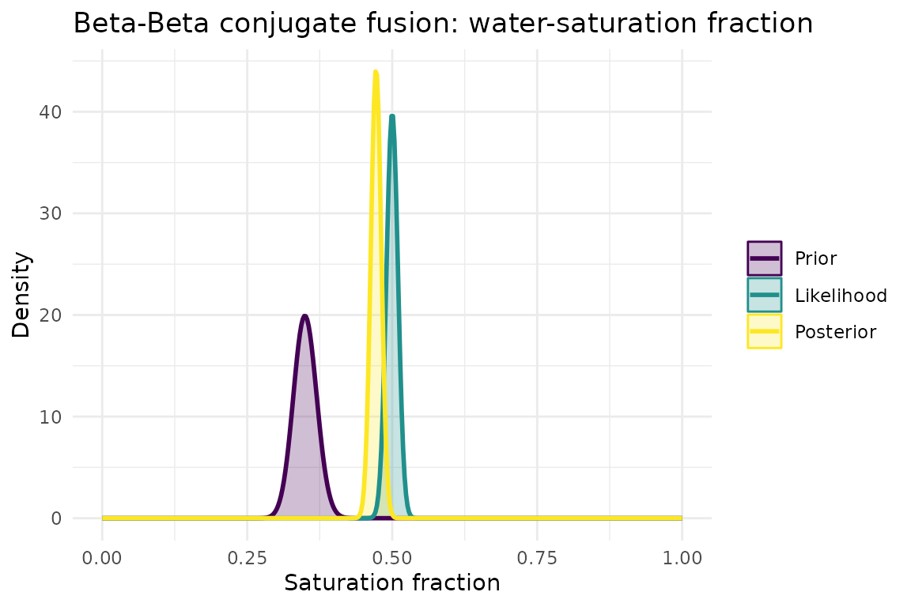
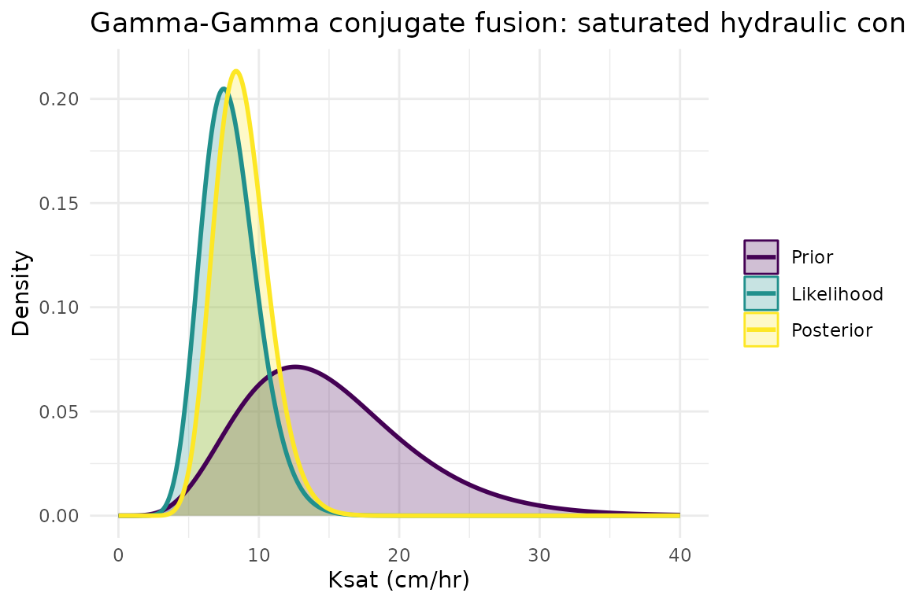

Bayesian Updating (Scalar): Fusing Priors with Observed Data
Source:vignettes/bayesian-updating.Rmd
bayesian-updating.RmdOverview
The other vignettes in this package
(getting-started-monte-carlo.Rmd,
raster-fusion-ssurgo-solus.Rmd) walk through top-level
pipeline functions end to end. This vignette instead zooms in
on a single thematic group of low-level, pure-math functions -
R/bayesian-updating.R - and works through each one
individually: what it computes, what each parameter controls, and how
varying that parameter changes the result. It is the finer-grained,
“read the primitives” companion to
raster-fusion-ssurgo-solus.Rmd, which exercises this exact
math implicitly (raster-native, cell by cell) inside its fusion pipeline
but never isolates it. See
soilSIM/docs/08_bayesian_updating.md for the full
function-level reference this vignette is based on.
bayesian-updating.R fuses a prior
belief about a soil property (e.g. an SSURGO-derived estimate) with a
likelihood - newly observed data (e.g. lab or field
measurements) - into a posterior belief that combines
both, weighted by how confident (precise) each side is. All examples
below use small, clearly-labeled synthetic prior/likelihood values - no
network access or real SSURGO/SOLUS data is needed for this
vignette.
Steps:
-
bayes_update_normal_normal()- exact closed-form Normal-Normal fusion, worked example plus a sensitivity sweep over relative precision. -
normal_to_lognormal_params()/lognormal_to_normal_params()- fusing a right-skewed, strictly positive property (organic matter) safely, in log-space. -
fuse_beta()/fuse_gamma()- closed-form same-family fusion for bounded (Beta) and positive-skewed (Gamma) properties, plus their moment-conversion helpers. -
fuse_bivariate_normal()- the 2D generalization, illustrated on a joint clay/sand/silt (ILR) example. - The dispatchers
bayes_fuse(),bayesian_update(), andfuse_property()- how they route to the right method.
Step 1: bayes_update_normal_normal() - exact
Normal-Normal fusion
Purpose: fuse a Normal prior
N(prior_mu, prior_sigma) with a Normal likelihood
N(lik_mu, lik_sigma) into a Normal posterior, via
precision-weighted averaging. Precision is the inverse variance
(1 / sigma^2) - a tighter (smaller-sigma) distribution has
higher precision, i.e. it represents a more confident belief.
Parameters:
-
prior_mu,prior_sigma- the prior’s mean and standard deviation. -
lik_mu,lik_sigma- the likelihood’s mean and standard deviation, in the same units.
All four arguments are plain numeric scalars or equal-length vectors
(the function is fully vectorized, which is what lets
raster-fusion.R reuse it unchanged across every cell of a
SpatRaster).
A worked example
A hypothetical SSURGO-derived prior belief about clay content (%) for some map unit, and a hypothetical lab-observed likelihood from a handful of new samples at the same location:
prior_clay <- list(mu = 22, sigma = 6) # SSURGO-derived prior belief
lik_clay <- list(mu = 30, sigma = 3) # hypothetical lab observation, more precise than the prior
posterior_clay <- bayes_update_normal_normal(
prior_mu = prior_clay$mu, prior_sigma = prior_clay$sigma,
lik_mu = lik_clay$mu, lik_sigma = lik_clay$sigma
)
posterior_clay
#> $mu
#> [1] 28.4
#>
#> $sigma
#> [1] 2.683282Two documented invariants, checked here empirically rather than just asserted:
# Fusion only sharpens - the posterior can never be more uncertain than either input
posterior_clay$sigma <= min(prior_clay$sigma, lik_clay$sigma)
#> [1] TRUE
# The posterior mean is pulled between the two inputs, never outside their range
posterior_clay$mu >= min(prior_clay$mu, lik_clay$mu) && posterior_clay$mu <= max(prior_clay$mu, lik_clay$mu)
#> [1] TRUEAnd the function is symmetric under swapping which side is called “prior” and which is “likelihood” - the math doesn’t care about the labels, only the (mu, sigma) pairs:
swapped <- bayes_update_normal_normal(
prior_mu = lik_clay$mu, prior_sigma = lik_clay$sigma,
lik_mu = prior_clay$mu, lik_sigma = prior_clay$sigma
)
identical(posterior_clay, swapped)
#> [1] TRUEPlotting all three distributions makes the fusion concrete: the posterior (green) is narrower than both the prior (purple) and the likelihood (yellow), and sits closer to the likelihood because the likelihood was specified as more precise (smaller sigma) here:
normal_pdf_df <- function(mu, sigma, label, x) {
data.frame(x = x, density = dnorm(x, mu, sigma), source = label)
}
x_grid <- seq(0, 45, length.out = 400)
dist_df <- rbind(
normal_pdf_df(prior_clay$mu, prior_clay$sigma, "Prior", x_grid),
normal_pdf_df(lik_clay$mu, lik_clay$sigma, "Likelihood", x_grid),
normal_pdf_df(posterior_clay$mu, posterior_clay$sigma, "Posterior", x_grid)
)
dist_df$source <- factor(dist_df$source, levels = c("Prior", "Likelihood", "Posterior"))
ggplot(dist_df, aes(x = x, y = density, color = source, fill = source)) +
geom_area(alpha = 0.25, position = "identity") +
geom_line(linewidth = 1) +
scale_color_viridis_d(name = NULL) +
scale_fill_viridis_d(name = NULL) +
theme_minimal() +
labs(
title = "Normal-Normal Bayesian fusion: clay content",
subtitle = "Posterior is narrower than both inputs, and pulled toward the more precise (likelihood) side",
x = "Clay content (%)", y = "Density"
)
Sensitivity sweep: relative precision drives where the posterior lands
The core intuition of Bayesian fusion is that the posterior mean is
not a simple average of the two inputs - it’s a
precision-weighted average, so whichever side is more certain
(smaller sigma) pulls the posterior further toward itself. We hold
prior_mu/prior_sigma fixed and vary only
lik_sigma across three cases - likelihood much more
precise, comparably precise, and much less precise than the prior -
while holding lik_mu fixed too, so any movement in the
posterior mean is attributable purely to the changing relative
precision:
prior_mu <- 22; prior_sigma <- 6
lik_mu <- 30
sweep_cases <- data.frame(
case = c("Likelihood much more precise", "Comparable precision", "Likelihood much less precise"),
lik_sigma = c(1, 6, 18)
)
sweep_results <- do.call(rbind, lapply(seq_len(nrow(sweep_cases)), function(i) {
post <- bayes_update_normal_normal(prior_mu, prior_sigma, lik_mu, sweep_cases$lik_sigma[i])
data.frame(
case = sweep_cases$case[i],
lik_sigma = sweep_cases$lik_sigma[i],
posterior_mu = post$mu,
posterior_sigma = post$sigma
)
}))
sweep_results
#> case lik_sigma posterior_mu posterior_sigma
#> 1 Likelihood much more precise 1 29.78378 0.9863939
#> 2 Comparable precision 6 26.00000 4.2426407
#> 3 Likelihood much less precise 18 22.80000 5.6920998As lik_sigma shrinks (likelihood becomes more precise,
first row), posterior_mu moves closer to
lik_mu (30); as lik_sigma grows (likelihood
becomes less precise, last row), posterior_mu stays closer
to prior_mu (22). This is the fusion “tug of war” made
visible:
ggplot(sweep_results, aes(x = reorder(case, lik_sigma), y = posterior_mu)) +
geom_hline(yintercept = prior_mu, linetype = "dashed", color = viridisLite::viridis(1, begin = 0.15)) +
geom_hline(yintercept = lik_mu, linetype = "dashed", color = viridisLite::viridis(1, begin = 0.75)) +
geom_point(aes(color = case), size = 4) +
geom_errorbar(aes(ymin = posterior_mu - posterior_sigma, ymax = posterior_mu + posterior_sigma,
color = case), width = 0.15) +
scale_color_viridis_d(guide = "none") +
theme_minimal() +
labs(
title = "Posterior mean shifts toward whichever side is more precise",
subtitle = "Dashed lines mark prior_mu (22, lower) and lik_mu (30, upper); prior_sigma fixed at 6",
x = NULL, y = "Posterior mean (+/- posterior sd)"
)
Step 2: fusing a right-skewed property safely -
normal_to_lognormal_params() /
lognormal_to_normal_params()
bayes_update_normal_normal() assumes both sides are
Normal. That’s a problem for strictly-positive, right-skewed properties
like organic matter (OM) or CEC: if a property’s sigma is large relative
to its mean, treating it as Normal and fusing directly can place real
posterior probability mass below zero, which is physically
impossible for a percentage or concentration.
normal_to_lognormal_params(mu, sigma) moment-matches a
raw-space Lognormal’s mean/sd onto the mu/
sigma of its underlying (log-space) Normal, so
bayes_update_normal_normal() can be reused unchanged in
log-space; lognormal_to_normal_params(mu_log, sigma_log) is
its exact algebraic inverse, converting the fused log-space posterior
back to raw-space mean/sd.
A hypothetical prior and likelihood for organic matter (%), a property that is right-skewed with a sigma large enough, relative to its mean, to be a real concern:
prior_om <- list(mu = 3.0, sigma = 2.0) # SSURGO-derived prior; sigma is 2/3 of the mean
lik_om <- list(mu = 5.5, sigma = 1.0) # hypothetical lab observationFusing these directly as if Normal risks a posterior mean minus a couple of sigma dropping below zero; more importantly, the shape of a raw Normal fit ignores the right skew altogether. Converting to log-space first:
prior_om_log <- normal_to_lognormal_params(prior_om$mu, prior_om$sigma)
lik_om_log <- normal_to_lognormal_params(lik_om$mu, lik_om$sigma)
prior_om_log
#> $mu
#> [1] 0.9147499
#>
#> $sigma
#> [1] 0.6064031
lik_om_log
#> $mu
#> [1] 1.688486
#>
#> $sigma
#> [1] 0.1803419Fusing in log-space (still an exact Normal-Normal update, just on the log-transformed parameters), then converting the posterior back to raw space:
posterior_om_log <- bayes_update_normal_normal(
prior_om_log$mu, prior_om_log$sigma, lik_om_log$mu, lik_om_log$sigma
)
posterior_om <- lognormal_to_normal_params(posterior_om_log$mu, posterior_om_log$sigma)
posterior_om
#> $mu
#> [1] 5.15803
#>
#> $sigma
#> [1] 0.898317lognormal_to_normal_params() is the exact inverse of
normal_to_lognormal_params() - round-tripping raw-space
parameters through both functions returns the original values, up to
floating-point precision:
roundtrip <- lognormal_to_normal_params(prior_om_log$mu, prior_om_log$sigma)
all.equal(roundtrip, prior_om)
#> [1] TRUEPlotting the raw-space prior, likelihood, and posterior as Lognormal densities (never negative, right skewed, exactly what a percentage should look like) versus what a naive raw-space Normal fusion would have produced:
x_grid_om <- seq(0.001, 12, length.out = 400)
lognormal_pdf <- function(mu_log, sigma_log, label, x) {
data.frame(x = x, density = dlnorm(x, meanlog = mu_log, sdlog = sigma_log), source = label)
}
om_dist_df <- rbind(
lognormal_pdf(prior_om_log$mu, prior_om_log$sigma, "Prior (Lognormal)", x_grid_om),
lognormal_pdf(lik_om_log$mu, lik_om_log$sigma, "Likelihood (Lognormal)", x_grid_om),
lognormal_pdf(posterior_om_log$mu, posterior_om_log$sigma, "Posterior (Lognormal)", x_grid_om)
)
om_dist_df$source <- factor(om_dist_df$source,
levels = c("Prior (Lognormal)", "Likelihood (Lognormal)", "Posterior (Lognormal)"))
naive_posterior_om <- bayes_update_normal_normal(prior_om$mu, prior_om$sigma, lik_om$mu, lik_om$sigma)
ggplot(om_dist_df, aes(x = x, y = density, color = source, fill = source)) +
geom_area(alpha = 0.25, position = "identity") +
geom_line(linewidth = 1) +
geom_vline(xintercept = naive_posterior_om$mu - 2 * naive_posterior_om$sigma,
linetype = "dotted", color = "grey40") +
annotate("text", x = naive_posterior_om$mu - 2 * naive_posterior_om$sigma, y = 0, hjust = -0.05,
vjust = -0.5, size = 3, color = "grey40",
label = "naive raw-Normal\nposterior mean - 2sd") +
scale_color_viridis_d(name = NULL) +
scale_fill_viridis_d(name = NULL) +
theme_minimal() +
labs(
title = "Log-space fusion keeps organic matter strictly positive",
subtitle = "The naive raw-space Normal posterior's mean-2sd point (dotted line) falls near/below zero",
x = "Organic matter (%)", y = "Density"
)
# The naive raw-space Normal fusion's implied lower tail:
naive_posterior_om$mu - 2 * naive_posterior_om$sigma
#> [1] 3.211146Step 3: same-family closed-form fusion - fuse_beta() /
fuse_gamma()
Some properties are naturally bounded (a fraction/percentage in
[0, 1], e.g. saturation) and fit better as a
Beta distribution than a Normal; others are strictly
positive with a long right tail and fit better as a
Gamma distribution. Both families have their own exact
closed-form conjugate fusion rule, analogous to Normal
precision-addition but on that family’s own shape parameters.
fuse_beta()
Purpose: fuse two Beta beliefs,
Beta(prior_alpha, prior_beta) and
Beta(lik_alpha, lik_beta), via straight addition of shape
parameters minus one:
Beta(a1,b1) x Beta(a2,b2) -> Beta(a1+a2-1, b1+b2-1).
Parameters: prior_alpha,
prior_beta, lik_alpha, lik_beta -
each side’s Beta shape parameters (numeric scalar or vector).
Returns: list(alpha=, beta=, feasible=)
- feasible flags whether the fused shape parameters stayed
positive (prior_alpha + lik_alpha > 1 and
prior_beta + lik_beta > 1), a requirement for the result
to remain a valid distribution.
A hypothetical prior and likelihood belief about water-saturation
fraction, both expressed as Beta parameters (moment-matched via
moments_to_beta() from an assumed mean/variance, so the
shapes are concrete and interpretable):
prior_sat_moments <- list(mean = 0.35, var = 0.02^2)
lik_sat_moments <- list(mean = 0.50, var = 0.01^2)
prior_sat_beta <- moments_to_beta(prior_sat_moments$mean, prior_sat_moments$var)
lik_sat_beta <- moments_to_beta(lik_sat_moments$mean, lik_sat_moments$var)
prior_sat_beta
#> $alpha
#> [1] 198.7125
#>
#> $beta
#> [1] 369.0375
lik_sat_beta
#> $alpha
#> [1] 1249.5
#>
#> $beta
#> [1] 1249.5
posterior_sat_beta <- fuse_beta(
prior_sat_beta$alpha, prior_sat_beta$beta, lik_sat_beta$alpha, lik_sat_beta$beta
)
posterior_sat_beta
#> $alpha
#> [1] 1447.212
#>
#> $beta
#> [1] 1617.537
#>
#> $feasible
#> [1] TRUEbeta_to_moments() converts the fused shape parameters
back to an interpretable mean/variance, and is also the function used
(on the inputs) if feasible had come back
FALSE, to fall back to fusing in Normal-moment space
instead:
beta_to_moments(posterior_sat_beta$alpha, posterior_sat_beta$beta)
#> $mean
#> [1] 0.4722123
#>
#> $var
#> [1] 8.129425e-05
beta_pdf <- function(alpha, beta, label, x) {
data.frame(x = x, density = dbeta(x, alpha, beta), source = label)
}
x_grid_sat <- seq(0, 1, length.out = 400)
sat_dist_df <- rbind(
beta_pdf(prior_sat_beta$alpha, prior_sat_beta$beta, "Prior", x_grid_sat),
beta_pdf(lik_sat_beta$alpha, lik_sat_beta$beta, "Likelihood", x_grid_sat),
beta_pdf(posterior_sat_beta$alpha, posterior_sat_beta$beta, "Posterior", x_grid_sat)
)
sat_dist_df$source <- factor(sat_dist_df$source, levels = c("Prior", "Likelihood", "Posterior"))
ggplot(sat_dist_df, aes(x = x, y = density, color = source, fill = source)) +
geom_area(alpha = 0.25, position = "identity") +
geom_line(linewidth = 1) +
scale_color_viridis_d(name = NULL) +
scale_fill_viridis_d(name = NULL) +
theme_minimal() +
labs(
title = "Beta-Beta conjugate fusion: water-saturation fraction",
x = "Saturation fraction", y = "Density"
)
fuse_gamma()
Purpose: fuse two Gamma beliefs,
Gamma(prior_shape, prior_rate) and
Gamma(lik_shape, lik_rate) (shape/rate parameterization),
via Gamma(k1,r1) x Gamma(k2,r2) -> Gamma(k1+k2-1, r1+r2)
- rates add outright (like Normal precisions), shapes add minus one
(like Beta’s alpha/beta).
Parameters: prior_shape,
prior_rate, lik_shape,
lik_rate.
Returns:
list(shape=, rate=, feasible=), feasible
requiring prior_shape + lik_shape > 1.
A hypothetical prior/likelihood for saturated hydraulic conductivity
(strictly positive, long right tail), again built via the Gamma
method-of-moments helper moments_to_gamma():
prior_ksat_moments <- list(mean = 15, var = 6^2)
lik_ksat_moments <- list(mean = 8, var = 2^2)
prior_ksat_gamma <- moments_to_gamma(prior_ksat_moments$mean, prior_ksat_moments$var)
lik_ksat_gamma <- moments_to_gamma(lik_ksat_moments$mean, lik_ksat_moments$var)
prior_ksat_gamma
#> $shape
#> [1] 6.25
#>
#> $rate
#> [1] 0.4166667
lik_ksat_gamma
#> $shape
#> [1] 16
#>
#> $rate
#> [1] 2
posterior_ksat_gamma <- fuse_gamma(
prior_ksat_gamma$shape, prior_ksat_gamma$rate, lik_ksat_gamma$shape, lik_ksat_gamma$rate
)
posterior_ksat_gamma
#> $shape
#> [1] 21.25
#>
#> $rate
#> [1] 2.416667
#>
#> $feasible
#> [1] TRUE
gamma_to_moments(posterior_ksat_gamma$shape, posterior_ksat_gamma$rate)
#> $mean
#> [1] 8.793103
#>
#> $var
#> [1] 3.638526
gamma_pdf <- function(shape, rate, label, x) {
data.frame(x = x, density = dgamma(x, shape = shape, rate = rate), source = label)
}
x_grid_ksat <- seq(0.01, 40, length.out = 400)
ksat_dist_df <- rbind(
gamma_pdf(prior_ksat_gamma$shape, prior_ksat_gamma$rate, "Prior", x_grid_ksat),
gamma_pdf(lik_ksat_gamma$shape, lik_ksat_gamma$rate, "Likelihood", x_grid_ksat),
gamma_pdf(posterior_ksat_gamma$shape, posterior_ksat_gamma$rate, "Posterior", x_grid_ksat)
)
ksat_dist_df$source <- factor(ksat_dist_df$source, levels = c("Prior", "Likelihood", "Posterior"))
ggplot(ksat_dist_df, aes(x = x, y = density, color = source, fill = source)) +
geom_area(alpha = 0.25, position = "identity") +
geom_line(linewidth = 1) +
scale_color_viridis_d(name = NULL) +
scale_fill_viridis_d(name = NULL) +
theme_minimal() +
labs(
title = "Gamma-Gamma conjugate fusion: saturated hydraulic conductivity",
x = "Ksat (cm/hr)", y = "Density"
)
Both fuse_beta() and fuse_gamma() are only
valid when the fused shape parameters stay positive - if
feasible comes back FALSE for some cell/case,
the documented fallback is to re-express both sides as Normal moments
(beta_to_moments()/gamma_to_moments()), fuse
with bayes_update_normal_normal(), and convert the result
back (moments_to_beta()/moments_to_gamma()).
This fallback is not automatic - a caller hitting
feasible == FALSE must invoke it explicitly.
Step 4: joint 2D fusion - fuse_bivariate_normal()
Clay, sand, and silt must sum to 100 - fusing them independently
(three separate fuse_beta() calls) measurably breaks that
constraint. fuse_bivariate_normal() is the direct
multivariate generalization of
bayes_update_normal_normal(): precision matrices
add instead of scalar precisions, which is what lets soilSIM fuse
clay/sand/silt jointly in 2D isometric-log-ratio (ILR) space and get a
fused composition that sums to 100 by construction.
Parameters: mu1, mu2 -
length-2 mean vectors; Sigma1, Sigma2 - 2x2
covariance matrices.
Returns:
list(mu = fused mean vector, Sigma = fused covariance matrix).
A small, illustrative example directly in ILR-coordinate space (not
full clay/sand/silt triplets - that full workflow is
fuse_texture_group_from_triplets(), which wraps this
function together with distributions.R’s
estimate_ilr_moments_mc()/sample_ilr_posterior();
see soilSIM/docs/08_bayesian_updating.md for that whole
chain). Here we fuse two independent bivariate Normal beliefs about a 2D
ILR coordinate pair directly:
mu1 <- c(0.10, -0.30) # hypothetical prior ILR-space belief
Sigma1 <- matrix(c(0.05^2, 0, 0, 0.04^2), nrow = 2)
mu2 <- c(0.25, -0.15) # hypothetical likelihood ILR-space belief
Sigma2 <- matrix(c(0.02^2, 0, 0, 0.02^2), nrow = 2)
fused_ilr <- fuse_bivariate_normal(mu1, Sigma1, mu2, Sigma2)
fused_ilr
#> $mu
#> [1] 0.2293103 -0.1800000
#>
#> $Sigma
#> [,1] [,2]
#> [1,] 0.0003448276 0.00000
#> [2,] 0.0000000000 0.00032As in the scalar case, fusion sharpens: each posterior variance (the
diagonal of Sigma) is no larger than the corresponding
diagonal entries of either input covariance matrix, and the posterior
mean sits between the two inputs, pulled toward whichever side had the
smaller (more precise) variances - Sigma2 here, so
fused_ilr$mu sits closer to mu2:
fuse_texture_group_from_triplets(prior_triplets, lik_triplets, z_prior, z_lik, n_mc, n_samples, total)
is the full clay/sand/silt workflow built on top of this: it estimates
each side’s ILR-space (mu, Sigma) from
low/representative/high triplets via
estimate_ilr_moments_mc(), fuses them with
fuse_bivariate_normal() exactly as above, then draws
posterior clay/sand/silt samples via sample_ilr_posterior()
- guaranteed, by construction, to sum to 100.
raster-fusion-ssurgo-solus.Rmd’s “Step 2: Fuse a
compositional group” demonstrates this full chain on real
SSURGO/SOLUS100 rasters.
Step 5: the dispatchers - bayes_fuse(),
bayesian_update(), fuse_property()
Rather than calling
bayes_update_normal_normal()/fuse_beta()/fuse_gamma()
directly, code often goes through one of three dispatchers that route to
the right method automatically.
bayes_fuse() - same-family dispatcher
Purpose: pick the right closed-form
fuse_*() function based on a family argument,
given both sides’ parameters as named lists.
Parameters: prior_params,
lik_params - named lists matching family
(list(mu=,sigma=) for "normal",
list(alpha=,beta=) for "beta",
list(shape=,rate=) for "gamma");
family - one of "normal", "beta",
"gamma" (via match.arg()).
bayes_fuse(prior_clay, lik_clay, family = "normal")
#> $mu
#> [1] 28.4
#>
#> $sigma
#> [1] 2.683282
bayes_fuse(list(alpha = prior_sat_beta$alpha, beta = prior_sat_beta$beta),
list(alpha = lik_sat_beta$alpha, beta = lik_sat_beta$beta),
family = "beta")
#> $alpha
#> [1] 1447.212
#>
#> $beta
#> [1] 1617.537
#>
#> $feasible
#> [1] TRUEIt is a plain switch() on family with no
logic beyond argument routing - both sides must already be fit in the
same family; there’s no closed form for fusing mismatched families.
bayesian_update() - fully general grid-KDE fusion
Purpose: when no distributional family fits cleanly,
or the two sides are in different families,
bayesian_update() fuses raw samples (not parameters) on a
shared value grid via kernel density estimation - fully general, at
higher computational cost than the closed-form tiers.
Parameters: prior_distribution,
likelihood_distribution - numeric vectors of raw samples;
grid_range - optional length-2 min/max (default
NULL, derived from the combined data range padded by 1);
grid_resolution - grid step size (default
0.01); n - number of posterior samples to draw
(default 1000).
set.seed(42)
prior_samples <- rnorm(500, mean = prior_clay$mu, sd = prior_clay$sigma)
lik_samples <- rnorm(30, mean = lik_clay$mu, sd = lik_clay$sigma)
posterior_samples <- bayesian_update(prior_samples, lik_samples, grid_resolution = 0.01, n = 1000)
mean(posterior_samples)
#> [1] 28.17379
sd(posterior_samples)
#> [1] 3.105For comparison, the closed-form result computed the same way in Step 1 for this exact prior/likelihood pair:
posterior_clay$mu
#> [1] 28.4
posterior_clay$sigma
#> [1] 2.683282The sample-based mean/sd approximate the closed-form values, as
expected - bayesian_update() is the fully general fallback
for cases the closed-form tiers can’t handle (arbitrary shapes,
mismatched families), not a routine substitute for them.
fuse_property() - top-level entry point, dispatching by
input shape
Purpose: a single entry point that inspects the
shape of prior/likelihood (raw-sample
vectors vs. named parameter lists) rather than requiring a
caller-supplied method flag, and routes accordingly.
Parameters: prior,
likelihood - both raw-sample vectors, or both named
parameter lists matching family; family -
required for the parameter-list route; bounds - unused,
kept for interface symmetry; method - optional assertion
("general" or "closed_form"); errors if it
doesn’t match what the input shape implies. n_samples,
grid_resolution - passed through to
bayesian_update().
# Vector inputs -> routes to bayesian_update() (the general route)
fuse_property(prior_samples, lik_samples, n_samples = 500) |> (\(s) c(mean = mean(s), sd = sd(s)))()
#> mean sd
#> 28.06634 2.80318
# Parameter-list inputs -> routes to bayes_fuse() (the closed-form route)
fuse_property(prior_clay, lik_clay, family = "normal")
#> $mu
#> [1] 28.4
#>
#> $sigma
#> [1] 2.683282The two routes deliberately return different shapes (a sample vector
vs. a parameter list) - not unified into a fake-common contract, since
the caller already knows which shape it passed in and therefore which
shape it gets back. Passing a method that contradicts the
input shape is an error rather than a silent override:
fuse_property(prior_clay, lik_clay, family = "normal", method = "general")
#> Error in `fuse_property()`:
#> ! fuse_property(): method = 'general' was requested but the input shape implies 'closed_form' - pass matching inputs or omit method.Where this fits in soilSIM
bayesian-updating.R is a standalone toolkit,
intentionally not called anywhere in monte-carlo.R - these
are independently-tested building blocks for a future “update an
SSURGO-derived prior against observed/field data” feature.
R/raster-fusion.R is the one place these exact functions
are already assembled into a complete pipeline, applying them unchanged
to SpatRaster cell values (via terra’s
operator overloading) rather than plain scalars/vectors - see
raster-fusion-ssurgo-solus.Rmd for that pipeline in action,
and soilSIM/docs/08_bayesian_updating.md /
soilSIM/docs/09_multi_source_raster_fusion_pipeline.md for
the full function-level references behind both.